作者: Ji You Email: jumail@qq.com
第3章 VirtualBox
Windows上的虚拟机软件，免费又好用的，非VirtualBox莫属。本章中将介绍如何在VirutalBox安装、操作虚拟机。
3.1 简介
VirtualBox是一款开源的虚拟机软件。Windows与Linux上都可以安装运行，现在由Oracle收购后更名为Orcale VM VirtualBox。具备友好的界面与易用性。不过VirtualBox本身并不是特别稳定，近来也在不断完善。
3.1.1 下载
至VirtualBox官方下载地址：
https://www.virtualbox.org/wiki/Downloads
选择合适的版本进行下载：
VirtualBox platform packages. The binaries are released under the terms of the GPL version 2.
VirtualBox 4.3.18 for Windows hosts x86/amd64
VirtualBox 4.3.18 for OS X hosts x86/amd64
VirtualBox 4.3.18 for Linux hosts
VirtualBox 4.3.18 for Solaris hosts amd64
如果是Windows，请选择VirtualBox x.x.xx for Windows hosts。此外，还需要安装VirtualBox扩展包：
VirtualBox 4.3.18 Oracle VM VirtualBox Extension Pack All supported platforms
在当前网页页面找到类似链接，点击下载即可。
3.1.2 安装
安装VirtualBox异常简单，只需要一路点击Next即可完成完装。唯一需要注意的是，在安装完成之后，找到所下载的扩展包：
Oracle_VM_VirtualBox_Extension_Pack-4.3.18-96516.vbox-extpack
具体版本可能有所不同，找到此后缀文件，双击即可运行。
3.2 安装虚拟机
Step 1
安装好VirtualBox之后，双击图标运行，点击新建按钮：
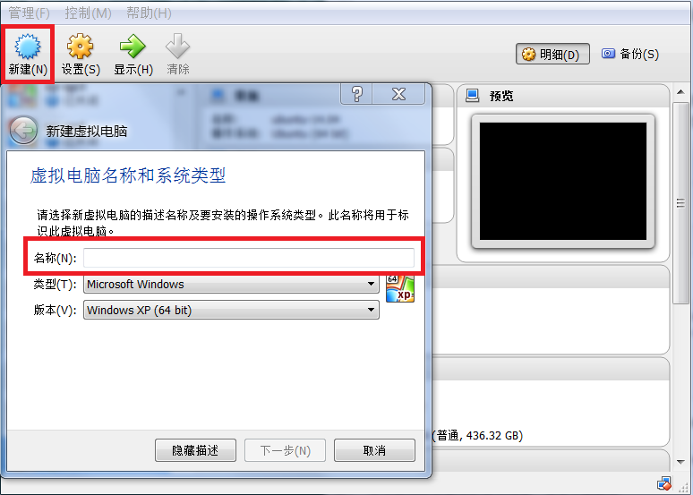
图3.1 点击新建按钮
Step 2
输入虚拟机名，选择操作系统类型：
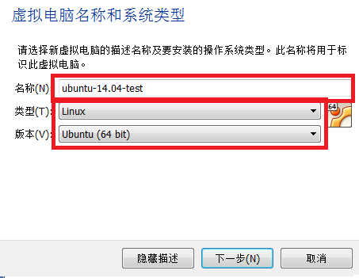
图3.2 输入虚拟机名，并且选择相应的操作系统。
注意此步骤非常重要，直接决定后面安装的系统是32位或是64位。所以一定要选对相应的版本。
Step 3
设置虚拟机占用的内存，如下图所示：
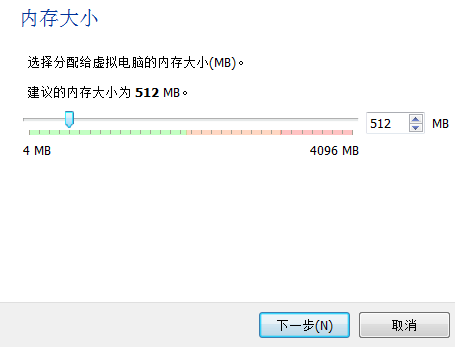
图3.3 设置虚拟机所用内存
Step 4
创建虚拟机虚拟硬盘：
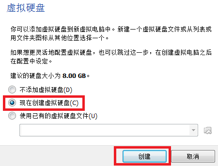
图3.4 添加虚拟机磁盘
Step 5
选择磁盘类型，一般选择VDI格式，如果考虑通用性，也可以选择qcow2格式。一般情况下，默认使用qcow2格式。
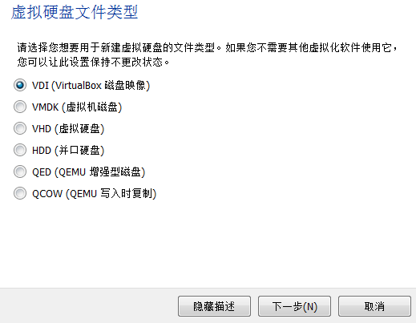
图3.5 选择磁盘格式
Step 6
选择磁盘分配模式，有两种模式可供选择，一种是动态分配，不会立即占用分配空间，是按需增长。一种是固定分配，会立即占用空间，但是读写速度较快。一般而言，为了节省空间考虑，建议择动态分配。
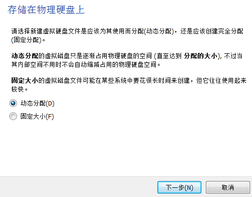
图3.6 选择磁盘创建种类
Step 7
接下来选择磁盘创建的位置与大小，如下图所示：
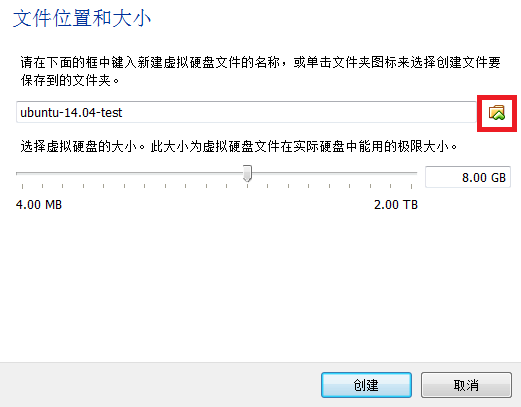
图3.7 选择磁盘创建的位置与磁盘的大小。
创建时，请点击右边的小角标，否则VirtualBox会将磁盘存放在它管理的文件夹中，不方便使用者管理磁盘。如下图，自定义磁盘存放路径：
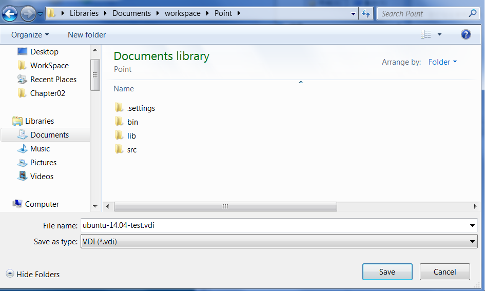
图3.8 自定义磁盘存放路径
选择好之后，可以调整磁盘空间的大小。
注意由于动态分配时，并不会立即占用空间，因此，在分配时可以将磁盘的大小选择偏大一些，以免虚拟机磁盘空间不足。
Step 8
点击创建按钮之后，就可以在VirtualBox主页面上看到相应虚拟机的名字了，选中此虚拟机：
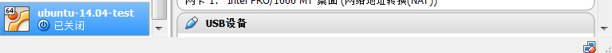
图3.9 选中新创建的虚拟机。
接着点击设置按钮，将会出现Settings菜单：
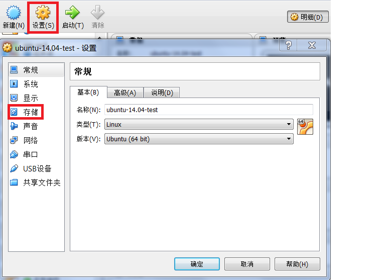
图3.9 设置新建虚拟机
Step 9
接下来需要对存储选项进行设置，选中存储项之后，点击IDE控制项的没有盘片，再点击选择一个虚拟光盘：
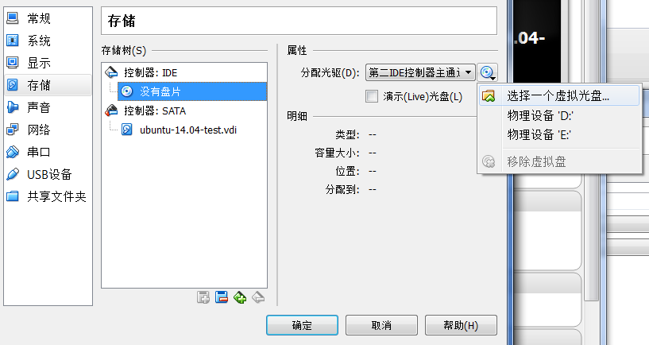
图3.9 选择ISO安装介质
选择完成之后，将会显示所选择的ISO文件名。
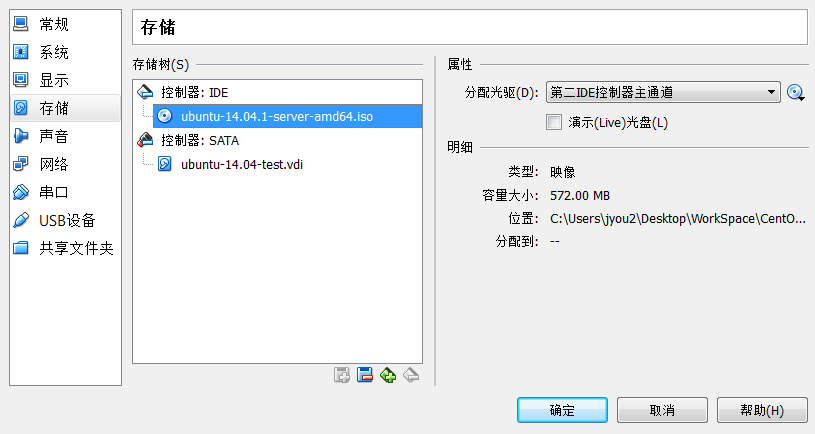
图3.10 选择ISO之后，显示其文件名
选择完成之后，点击确定按钮，设置完成。
Step 10
设置完成之后，点击启动按钮，启动虚拟机：
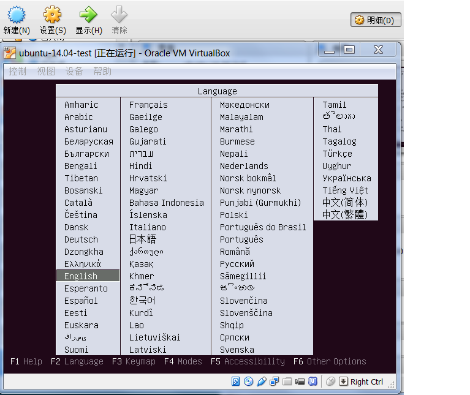
图3.11 启动虚拟机。
启动之后，则可以进行正常的安装步骤了。
3.3 虚拟网络
当虚拟机运行成功之后，为了正常并且安装OpenStack，需要添加虚拟网络，一般而言，VirtualBox支持四种网络：
-
NAT模式：最简单的实现虚拟机上网的方式，无需配置，默认选择即可接入网络。虚拟机访问网络的所有数据都是由主机提供的，访问速度较慢，和主机之间不能互相访问。
-
Bridged Adapter模式：即网桥模式，可以为虚拟机模拟出一个独立的网卡，有独立的IP地址，所有网络功能和主机一样，并且能够互相访问，实现文件的传递和共享。（注： Windows 7系统选择网桥模式时，需要手动安装VirtualBox 的桥接服务驱动。在本地连接的属性选项中，选择“Microsoft网络客户端”点击安装，网络功能类型选择“服务”点击添加，选择从磁盘安装，找到驱动路径“Oracle\VirtualBox\drivers\network\netflt”，选择VBoxNetFlt_m文件安装完成。）
- Internal模式：即内网模式，虚拟机与外网完全断开，只实现虚拟机于虚拟机之间的内部网络模式，和主机之间不能互相访问，就相当于虚拟机之间架设了一个独立的局域网。
- Host-only Adapter模式：即主机模式，是所有接入模式中最复杂的一种，需要有比较扎实的网络基础知识才行。前面几种模式所实现的功能，通过虚拟机及网卡的设置都可以被实现。
在本文中，网卡1至网卡3使用Host-only模式，而网卡4使用网桥模式，配置如下图所示：
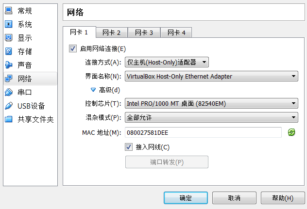
图3.12 网卡1~网卡3采用相同的配置。
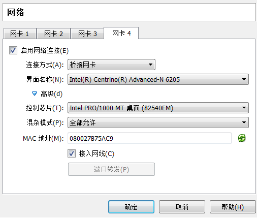
图3.13 网卡4的配置。
注意配置网卡需要在关闭虚拟机的情况下进行。在安装OpenStack时，就尽量不要使用网卡4。因为网卡4主要负责连接外部网络比如internet（实际上安装neutron时，有一个br-ex需要此网络，因此，尽量先预留给br-ex）。
3.4 虚拟磁盘
如果需要给虚拟机添加虚拟磁盘，关闭虚拟机之后，点需设置菜单，进入存储项，选择添加磁盘按钮：
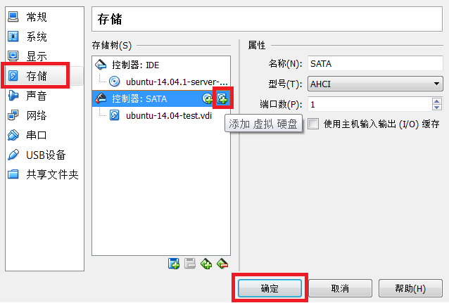
图3.14 添加虚拟磁盘
点击之后，会跳出对话框，可以选择新建磁盘或者已有磁盘。然后根据提示进行操作即可。
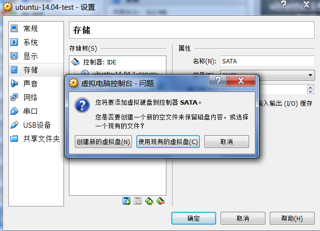
图3.15 添加虚拟磁盘对话框
创建完成之后，会看到相应的磁盘。
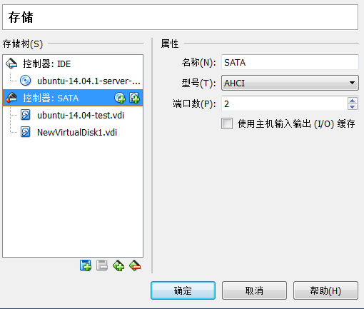
图3.16 添加虚拟磁盘成功
接下来，启动虚拟机，即可看到相应的磁盘，格式化之后，mount即可。
3.5 快速创建虚拟机
利用VirtualBox可以轻松地创建虚拟机，可是如果每个虚拟机都去从ISO开始安装，岂不很麻烦，好在VirtualBox也提供了方法可以很轻松地创建虚拟机。
点击管理菜单，选择虚拟介质管理选项：
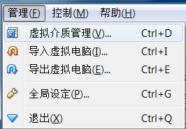
图3.17 管理虚拟介质
选中需要使用的虚拟机磁盘，然后点击复制按钮：
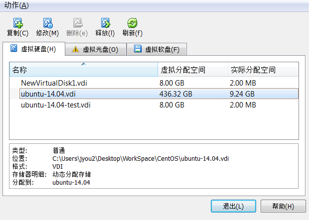
图3.18 复制虚拟介质
在弹出的对话框中，选择复制的虚拟介质存储位置：
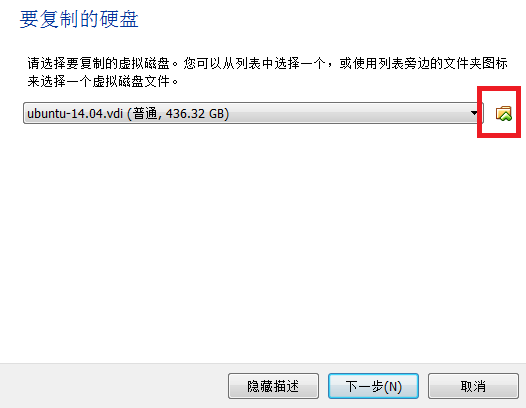
图3.19 选择复制的虚拟介质的存储路径
注意如果不选择存储路径，VirtualBox将会放置于默认路径中。
接下来按照新虚拟机的流程创建虚拟机，唯一不同的是，在创建磁盘时，选择已有磁盘即可。
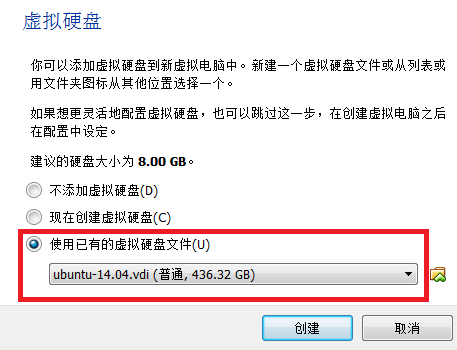
图3.20 注意选择正确的虚拟磁盘
3.6 连接外网
由于第四个网卡使用的是桥接模式，因此，只要物理机能够正常上网，那么虚拟机也是可以正常上网的。所以不需要在虚拟机上做特别的配置。
当然，需要做的是，保证虚拟机启动之后，第四个网卡处于开启状态。
3.7 小结
本章简要地介绍了VirtualBox创建虚拟机的流程，留下以下问给读者思考：
- 如何快速地创建虚拟机？
- 如何给虚拟机做快照？
- 如何删除虚拟机？如何删除虚拟机的所有文件？
- 一个虚拟机被删除之后，这个虚拟机名字，在新建时，还能否继续使用？